Sold listings shouldn't sit in the active sheet anymore. Move those rows into a Sold tab in this workbook, then get their photo folders out of the active listings directory into an archive folder next to it.
THINKINGThe user wants me to: 1) Move "Sold" status rows from the active_listings sheet into a new "Sold" tab, and 2) Move the photo folders for those sold listings out of the active listings directory into an archive folder next to it.
Let me first identify the Sold rows. From the screenshot, Status column E has "Sold" for:
- Row 3: 88 Falkner Ridge Rd (Dermot Kelly, 44)
- Row 5: 33 Quarrytown Ave (Priya Raman, 61)
- Row 8: 12 Coldbrook Way (Owen Trask, 88)
- Row 11: 128 Riverwind Blvd (Priya Raman, 52)
So 4 sold rows. The columns are: A=Address, B=Agent, C=List Price, D=Days on Market, E=Status.
I need to first check the file location and the directory structure to understand where "photo folders" are. Let me open a terminal to explore the file system. The file is active_listings.xlsx. Let me find it.
Let me start by opening a terminal to explore the directory structure. I'll use the Files/terminal application. There's a terminal icon in the taskbar.
First let me take a screenshot approach - but I already have one. Let me open terminal to explore where the file is and the photo folders.
ACTIONI'll start by exploring the file system to understand the workbook location and the photo folder structure. Let me open a terminal.
EXECUTED (pyautogui in VM)pyautogui.click(32, 670)
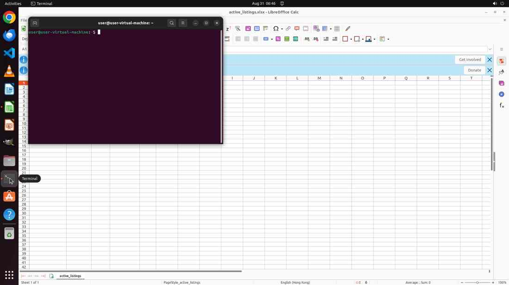
step 2 22:46:20
THINKINGThe terminal is open. I need to find the active_listings.xlsx file and understand the directory structure to locate photo folders. Let me search for the file and list the surrounding directories.
ACTIONTerminal is open. Let me locate the workbook and inspect the directory structure for the photo folders.
EXECUTED (pyautogui in VM)pyautogui.click(449, 299)
step 3 22:47:06
THINKINGThe terminal is focused. Let me find the file location first, then explore the directory to understand the photo folder structure. I'll run find and ls commands.
ACTIONLet me find the workbook and explore the directory structure.
EXECUTED (pyautogui in VM)pyautogui.press("return")
step 5 22:47:46
THINKINGThe file is at /home/user/harborline/active_listings.xlsx. Now I need to explore the harborline directory to understand the structure, especially the "active listings directory" containing photo folders. Let me list the directory tree.
ACTIONThe workbook is at `/home/user/harborline/`. Let me explore the directory to find the active listings folder and its photo folders.
TOOL CALL<tool_call>
<function=computer_use>
<parameter=action>
type
</parameter>
<parameter=text>
ls -la /home/user/harborline/
</parameter>
</function>
</tool_call>
EXECUTED (pyautogui in VM)pyautogui.typewrite("ls -la /home/user/harborline/")
step 6 22:48:13
THINKINGThe command is typed but I need to press Enter. The terminal window is small; output may scroll. Let me press Enter and also maximize the terminal to see full output. Actually let me just press Enter first.
EXECUTED (pyautogui in VM)pyautogui.press("return")
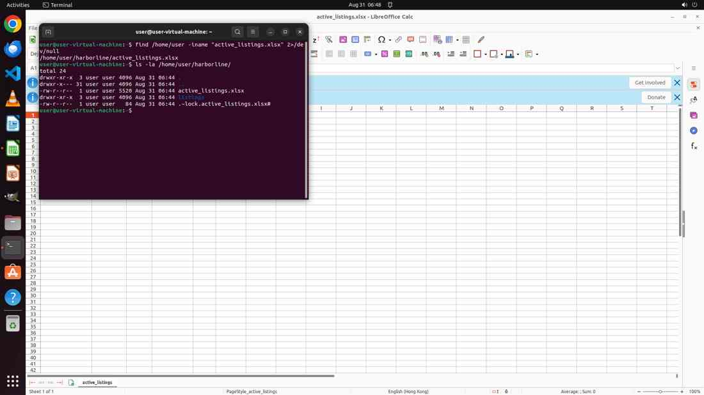
step 7 22:48:44
THINKINGThe harborline directory contains:
- active_listings.xlsx (the workbook)
- listings/ (a directory - this is likely the "active listings directory" containing photo folders)
- .~lock.active_listings.xlsx# (lock file since the workbook is open)
So the "active listings directory" is `/home/user/harborline/listings/`. Let me explore it to see the photo folders. The archive folder should be "next to it" - meaning next to the listings directory, so `/home/user/harborline/archive/` (or similar). Let me look inside listings.
ACTIONThe `listings/` directory is the active listings directory. Let me inspect its contents to find the photo folders.
TOOL CALL<tool_call>
<function=computer_use>
<parameter=action>
type
</parameter>
<parameter=text>
ls -la /home/user/harborline/listings/
</parameter>
</function>
</tool_call>
EXECUTED (pyautogui in VM)pyautogui.typewrite("ls -la /home/user/harborline/listings/")
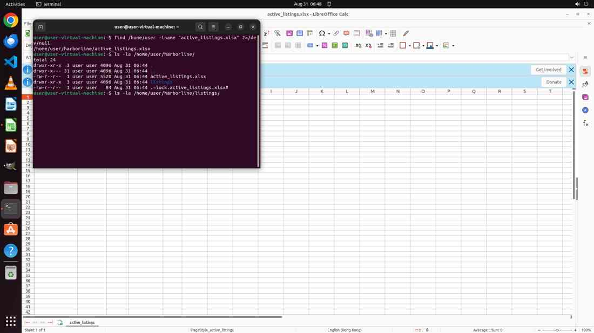
step 8 22:49:11
THINKINGThe command was typed but not yet executed (I see it on the prompt line without a trailing newline executed). Let me press Enter. The output might be long, so let me maximize the terminal window first to see it clearly. Actually let me just press Enter and take a screenshot.
EXECUTED (pyautogui in VM)pyautogui.press("return")
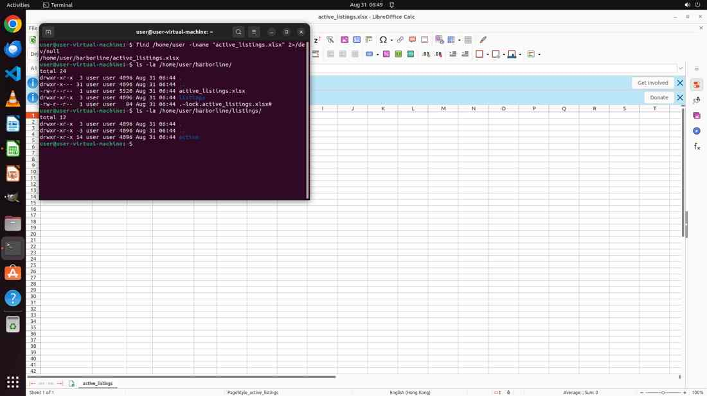
step 9 22:49:50
THINKINGSo `/home/user/harborline/listings/` contains an `active` subdirectory. So the "active listings directory" is `/home/user/harborline/listings/active/`. Let me list it to find the photo folders. The archive folder "next to it" would be `/home/user/harborline/listings/archive/`.
Let me list the active directory contents.
ACTIONThere's an `active/` subdirectory. Let me list its contents to find the photo folders.
TOOL CALL<tool_call>
<function=computer_use>
<parameter=action>
type
</parameter>
<parameter=text>
ls -la /home/user/harborline/listings/active/
</parameter>
</function>
</tool_call>
EXECUTED (pyautogui in VM)pyautogui.typewrite("ls -la /home/user/harborline/listings/active/")
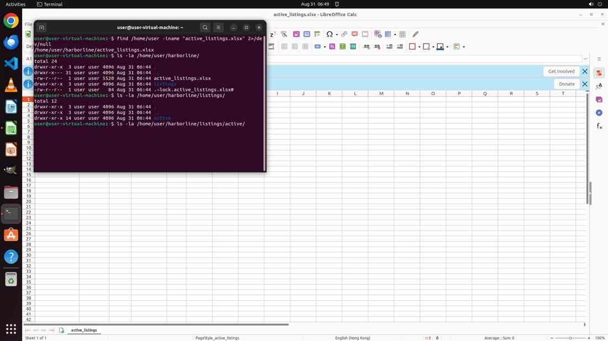
step 10 22:50:38
THINKINGThe command is typed but not executed. Let me press Enter.
EXECUTED (pyautogui in VM)pyautogui.press("return")
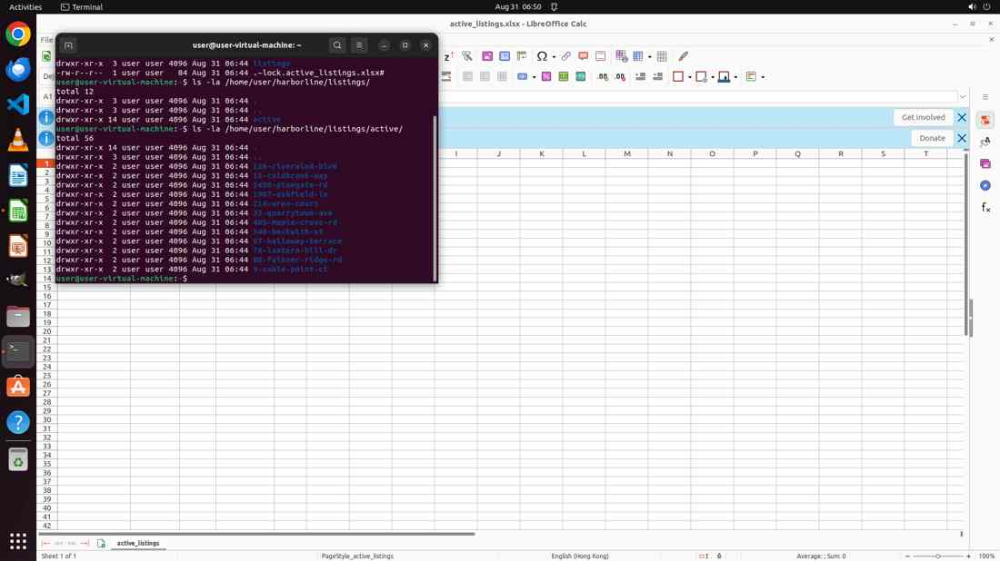
step 11 22:51:47
THINKINGNow I can see the photo folders in `/home/user/harborline/listings/active/`:
- 128-riverwind-blvd
- 12-coldbrook-way
- 1450-pinegate-rd
- 1907-ashfield-ln
- 214-wren-court
- 33-quarrytown-ave
- 405-maple-cross-rd
- 540-beckwith-st
- 67-halloway-terrace
- 76-lantern-hill-dr
- 88-falkner-ridge-rd
- 9-sable-point-ct
That's 12 folders, matching the 12 listings. The naming convention is `<number>-<street>-<suffix>`.
Now I need to identify which are Sold. From the spreadsheet:
Sold listings:
- Row 3: 88 Falkner Ridge Rd → 88-falkner-ridge-rd
- Row 5: 33 Quarrytown Ave → 33-quarrytown-ave
- Row 8: 12 Coldbrook Way → 12-coldbrook-way
- Row 11: 128 Riverwind Blvd → 128-riverwind-blvd
Let me verify the exact street names from the spreadsheet. In the first screenshot:
- Row 3: 88 Falkner Ridge Rd
- Row 5: 33 Quarrytown Ave
- Row 8: 12 Coldbrook Way
- Row 11: 128 Riverwind Blvd
These match the folders:
- 88-falkner-ridge-rd ✓
- 33-quarrytown-ave ✓
- 12-coldbrook-way ✓
- 128-riverwind-blvd ✓
Now, the task has two parts:
1. Move Sold rows into a "Sold" tab in the workbook (LibreOffice Calc GUI work).
2. Move the photo folders out of the active directory into an archive folder next to it.
The "active listings directory" is `/home/user/harborline/listings/active/`. The archive folder "next to it" would be `/home/user/harborline/listings/archive/`.
For part 2, I should use the GUI? The task says "get their photo folders out of the active listings directory into an archive folder next to it." I could use terminal mv, but the guidance says to use GUI native features and avoid CLI workarounds for the primary task. However, moving folders is a file management task, and the terminal is a legitimate tool here. But the guidance strongly discourages CLI workarounds when the app has the capability. Moving files via terminal is standard and not a "workaround" - it's the natural way. However, to be safe and align with the "use GUI" spirit, I could use the Files application. But terminal file operations are extremely reliable and this is a genuine file-system task, not a substitute for an app feature.
Actually, the primary app task is the spreadsheet (part 1). The file moving is a genuine filesystem operation. Using the terminal `mv` is the most reliable approach and appropriate here. I'll use the terminal for moving folders.
Let me first confirm the exact Sold rows from the spreadsheet by re-examining. I'm confident from the first screenshot. But let me double check row 11 address. In first screenshot, row 11 was "128 Riverwind Blvd" (Priya Raman, 52, Sold). Yes.
Now, let me be careful about the archive folder name. The task says "an archive folder next to it." "Next to it" = next to the active listings directory. The active listings directory is `active`. So archive folder should be a sibling: `listings/archive`. That's the most natural interpretation.
Let me proceed. First do the file move with terminal (part 2), then do the spreadsheet (part 1).
Actually, let me do the spreadsheet part first while it's fresh, then the file move. But the workbook is open with a lock file. Moving folders via terminal doesn't conflict with the workbook. Order doesn't matter much. Let me do the terminal file move now since I'm in the terminal, then switch to Calc.
Let me create the archive folder and move the 4 folders.
ACTIONI found the photo folders. The `active/` directory contains folders named by listing address. The Sold rows (from the spreadsheet: 88 Falkner Ridge Rd, 33 Quarrytown Ave, 12 Coldbrook Way, 128 Riverwind Blvd) correspond to folders `88-falkner-ridge-rd`, `33-quarrytown-ave`, `12-coldbrook-way`, and `128-riverwind-blvd`.
Let me create the archive folder (next to `active/`) and move those four folders into it.
EXECUTED (pyautogui in VM)pyautogui.press("return")
step 15 22:54:10
THINKINGVerification confirms:
- archive/ now contains: 128-riverwind-blvd, 12-coldbrook-way, 33-quarrytown-ave, 88-falkner-ridge-rd (the 4 sold folders) ✓
- active/ now contains: 1450-pinegate-rd, 214-wren-court, 540-beckwith-st, 76-lantern-hill-dr, 1907-ashfield-ln, 405-maple-cross-rd, 67-halloway-terrace, 9-sable-point-ct (the 8 non-sold folders) ✓
Part 2 (file move) is complete and verified. Now I need to do Part 1: move the Sold rows from the active_listings sheet into a new "Sold" tab.
Let me switch to LibreOffice Calc. I'll click on the Calc window. The task requires moving the 4 Sold rows (3, 5, 8, 11) into a new "Sold" sheet. I should preserve the header row in the new Sold sheet too (best practice to keep it a proper sheet). The task says "Move those rows into a Sold tab." I'll create a new sheet named "Sold", add the header row, then the 4 sold data rows, and delete them from active_listings.
Let me switch to Calc. Click on the Calc title bar / window. The Calc window is behind. Let me click on the spreadsheet area visible on the right side, or the title bar at top "active_listings.xlsx - LibreOffice Calc".
ACTIONPart 2 is complete and verified: the four sold folders are now in `archive/` and the remaining 8 active folders stay in `active/`.
Now for Part 1, I'll switch to LibreOffice Calc to move the Sold rows into a new "Sold" tab. Let me click on the Calc window.
EXECUTED (pyautogui in VM)pyautogui.click(993, 44)
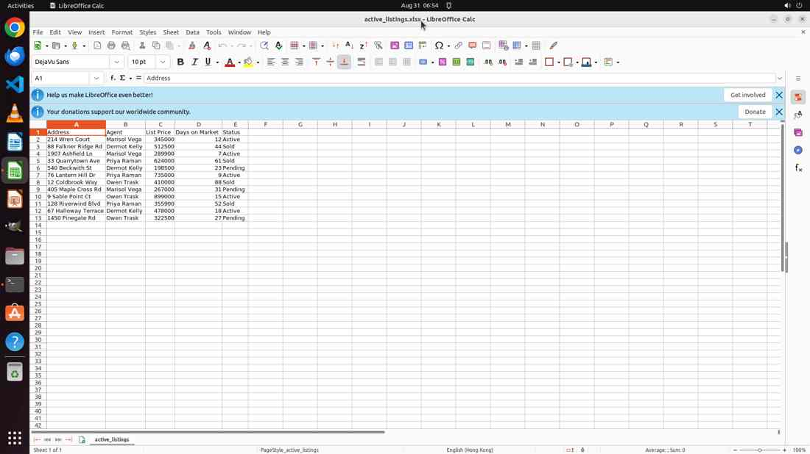
step 16 22:55:19
THINKINGNow I can see the full spreadsheet clearly. Let me confirm the data:
Row 1: Address | Agent | List Price | Days on Market | Status
Row 2: 214 Wren Court | Marisol Vega | 345000 | 12 | Active
Row 3: 88 Falkner Ridge Rd | Dermot Kelly | 512500 | 44 | Sold
Row 4: 1907 Ashfield Ln | Marisol Vega | 289900 | 7 | Active
Row 5: 33 Quarrytown Ave | Priya Raman | 624000 | 61 | Sold
Row 6: 540 Beckwith St | Dermot Kelly | 198500 | 23 | Pending
Row 7: 76 Lantern Hill Dr | Priya Raman | 735000 | 9 | Active
Row 8: 12 Coldbrook Way | Owen Trask | 410000 | 88 | Sold
Row 9: 405 Maple Cross Rd | Marisol Vega | 267000 | 31 | Pending
Row 10: 9 Sable Point Ct | Owen Trask | 899000 | 15 | Active
Row 11: 128 Riverwind Blvd | Priya Raman | 355900 | 52 | Sold
Row 12: 67 Halloway Terrace | Dermot Kelly | 478000 | 18 | Active
Row 13: 1450 Pinegate Rd | Owen Trask | 322500 | 27 | Pending
Sold rows: 3, 5, 8, 11. This matches my file moves. Good.
Now my plan for the spreadsheet:
1. Right-click the "active_listings" sheet tab → Insert Sheet → name it "Sold". Or use the + button. Let me insert a new sheet.
2. In the Sold sheet, type the header row (row 1) and the 4 sold data rows.
3. Delete the 4 sold rows from active_listings.
Actually, a cleaner approach: copy the sold rows from active_listings and paste into the new Sold sheet, then delete originals. But rows are non-contiguous (3, 5, 8, 11). I can select them with Ctrl+click and copy/paste together (LibreOffice supports non-contiguous copy). However, pasting non-contiguous cells keeps their relative positions.
A more reliable approach given only 4 rows: manually type the data into the Sold sheet. That's 5 rows x 5 columns = 25 cells. I can type each row with Tab between and Enter to go to next row. This is clean and reliable.
Let me first insert the Sold sheet. I'll right-click on the sheet tab.
Let me right-click the active_listings tab at the bottom.
ACTIONI can see all the data. The Sold rows are 3 (88 Falkner Ridge Rd), 5 (33 Quarrytown Ave), 8 (12 Coldbrook Way), and 11 (128 Riverwind Blvd), matching the folders I moved.
Let me create a new "Sold" sheet by right-clicking the sheet tab.
EXECUTED (pyautogui in VM)pyautogui.click(334, 848)
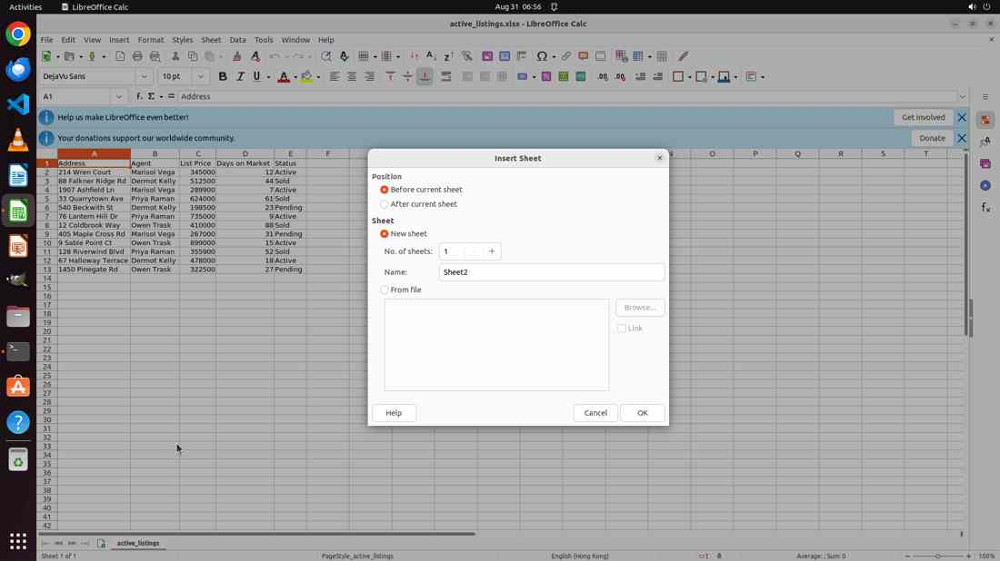
step 18 22:57:13
THINKINGThe Insert Sheet dialog is open. I want to insert "After current sheet" so the Sold tab appears to the right of active_listings. I'll select "After current sheet", set the Name to "Sold", then click OK. Let me:
1. Click "After current sheet" radio.
2. Clear the Name field and type "Sold".
3. Click OK.
ACTIONThe Insert Sheet dialog is open. I'll place it after the current sheet, name it "Sold", and confirm.
EXECUTED (pyautogui in VM)pyautogui.click(734, 389)
step 19 22:58:11
THINKING"After current sheet" is now selected. Now I need to set the Name field. Let me triple-click to select the "Sheet2" text and type "Sold", then click OK.
EXECUTED (pyautogui in VM)pyautogui.click(1228, 792)
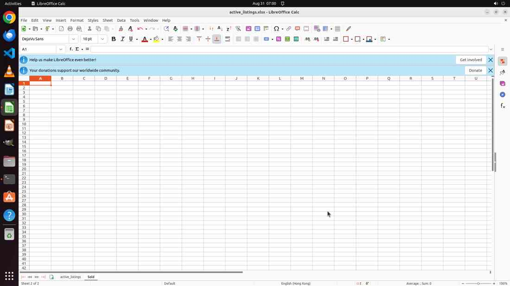
step 22 23:01:33
THINKINGThe "Sold" sheet is created and active (Sheet 2 of 2), empty, with A1 selected. Now I'll type the header row and the 4 sold data rows. I'll type each row using Tab to move across columns and Enter to go to the next row. However, after typing a row and pressing Enter, the cursor returns to column A of the next row (in LibreOffice, when you use Tab then Enter, it returns to the starting column of the next row). This behavior works if I start at A1 and use Tab within the row.
Let me type:
Row 1 (header): Address [Tab] Agent [Tab] List Price [Tab] Days on Market [Tab] Status [Enter]
Row 2: 88 Falkner Ridge Rd [Tab] Dermot Kelly [Tab] 512500 [Tab] 44 [Tab] Sold [Enter]
Row 3: 33 Quarrytown Ave [Tab] Priya Raman [Tab] 624000 [Tab] 61 [Tab] Sold [Enter]
Row 4: 12 Coldbrook Way [Tab] Owen Trask [Tab] 410000 [Tab] 88 [Tab] Sold [Enter]
Row 5: 128 Riverwind Blvd [Tab] Priya Raman [Tab] 355900 [Tab] 52 [Tab] Sold [Enter]
I'll batch this all in one type action using \t for Tab and \n for Enter.
ACTIONThe "Sold" sheet is created. Now I'll type the header row and the four sold listings into it.
TOOL CALL<tool_call>
<function=computer_use>
<parameter=action>
type
</parameter>
<parameter=text>
Address Agent List Price Days on Market Status
88 Falkner Ridge Rd Dermot Kelly 512500 44 Sold
33 Quarrytown Ave Priya Raman 624000 61 Sold
12 Coldbrook Way Owen Trask 410000 88 Sold
128 Riverwind Blvd Priya Raman 355900 52 Sold
</parameter>
</function>
</tool_call>
EXECUTED (pyautogui in VM)pyautogui.typewrite("Address\tAgent\tList Price\tDays on Market\tStatus\n88 Falkner Ridge Rd\tDermot Kelly\t512500\t44\tSold\n33 Quarrytown Ave\tPriya Raman\t624000\t61\tSold\n12 Coldbrook Way\tOwen Trask\t410000\t88\tSold\n128 Riverwind Blvd\tPriya Raman\t355900\t52\tSold")
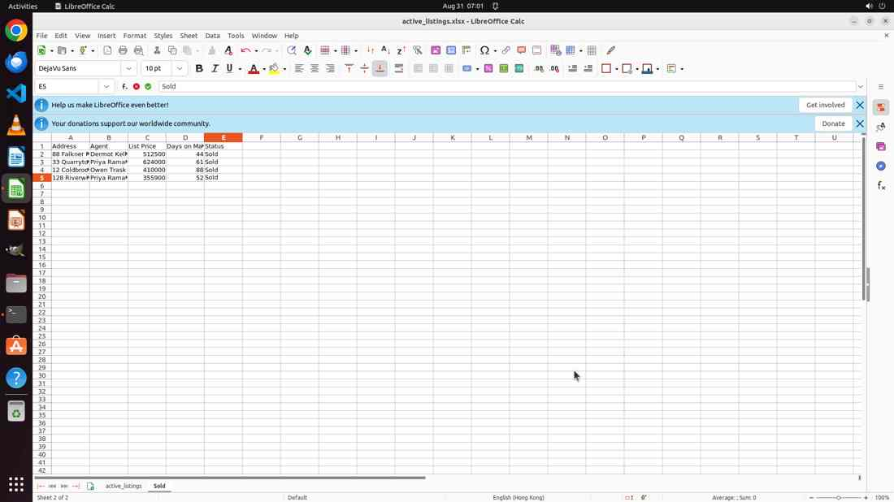
step 23 23:02:48
THINKINGThe Sold sheet now has all 5 rows entered correctly:
Row 1: Address | Agent | List Price | Days on Market | Status
Row 2: 88 Falkner R... | Dermot Kell... | 512500 | 44 | Sold
Row 3: 33 Quarryt... | Priya Rama... | 624000 | 61 | Sold
Row 4: 12 Coldbroo... | Owen Trask | 410000 | 88 | Sold
Row 5: 128 Riverw... | Priya Rama... | 355900 | 52 | Sold
The last cell E5 shows "Sold" in the formula bar and cursor is at E5. Good. The data looks correct.
Now I need to delete the sold rows from the active_listings sheet. Let me switch to active_listings tab.
ACTIONThe Sold sheet is populated with the header and all four sold listings. Now I'll switch to the active_listings sheet to remove those rows.
EXECUTED (pyautogui in VM)pyautogui.click(263, 1044)
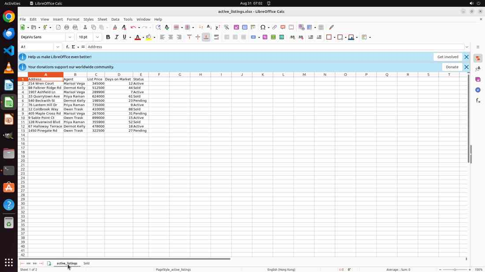
step 24 23:04:09
THINKINGNow I'm back on active_listings. I need to delete the sold rows (3, 5, 8, 11). To avoid row renumbering confusion, I'll delete from the bottom up. The sold rows are 11, 8, 5, 3.
I'll select each row by clicking the row header and delete. Let me delete row 11 first: click row header 11, then right-click → Delete Rows. Or select row 11 and use Sheet menu. Simpler: click row header to select entire row, then right-click → "Delete Rows".
Let me do row 11 first. Row 11 header is at y=323. I'll click the row number 11 (at x=60, y=323).
ACTIONNow I'll delete the sold rows from bottom to top to avoid renumbering issues. Starting with row 11 (128 Riverwind Blvd).
EXECUTED (pyautogui in VM)pyautogui.click(90, 482)
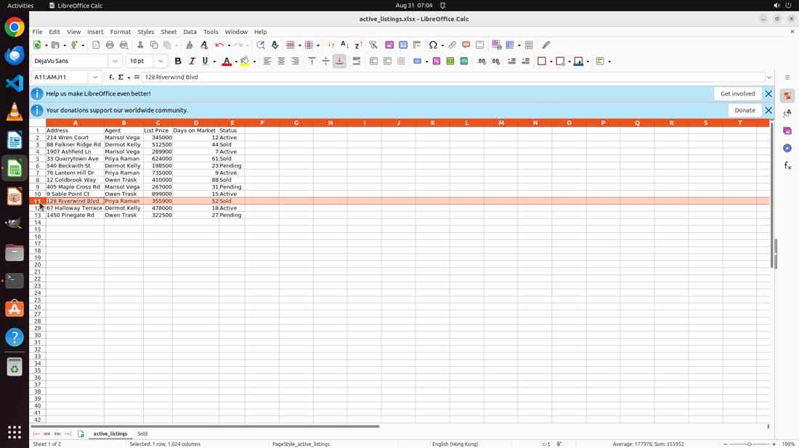
step 25 23:05:13
THINKINGRow 11 (128 Riverwind Blvd) is selected. I'll right-click on the row to get the context menu and choose Delete Rows. Actually, I can use the right-click context menu which has "Delete Rows". Let me right-click on the row header area.
ACTIONRow 11 is selected. Let me right-click to delete this row.
EXECUTED (pyautogui in VM)pyautogui.click(157, 601)
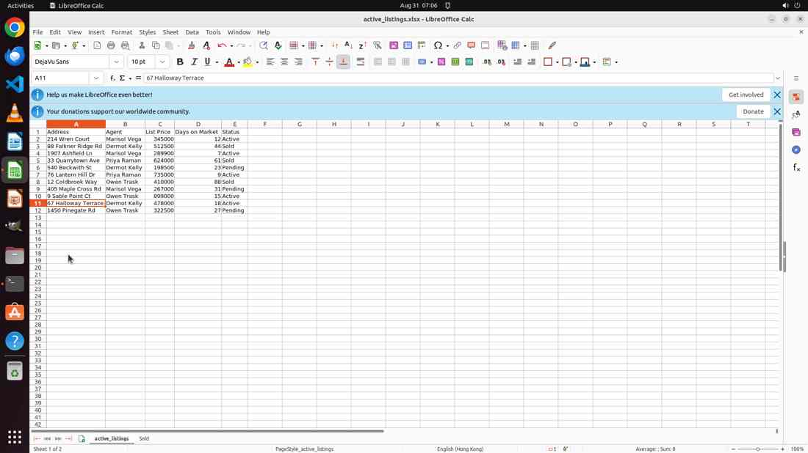
step 27 23:06:32
THINKINGRow 11 (128 Riverwind Blvd) is deleted. Now the list is:
Row 3: 88 Falkner Ridge Rd - Sold
Row 5: 33 Quarrytown Ave - Sold
Row 8: 12 Coldbrook Way - Sold
Rows now:
1: header
2: 214 Wren Court - Active
3: 88 Falkner Ridge Rd - Sold
4: 1907 Ashfield Ln - Active
5: 33 Quarrytown Ave - Sold
6: 540 Beckwith St - Pending
7: 76 Lantern Hill Dr - Active
8: 12 Coldbrook Way - Sold
9: 405 Maple Cross Rd - Pending
10: 9 Sable Point Ct - Active
11: 67 Halloway Terrace - Active
12: 1450 Pinegate Rd - Pending
Next delete row 8 (12 Coldbrook Way). Row 8 is at y=290. Let me select it and delete.
EXECUTED (pyautogui in VM)pyautogui.click(90, 434)
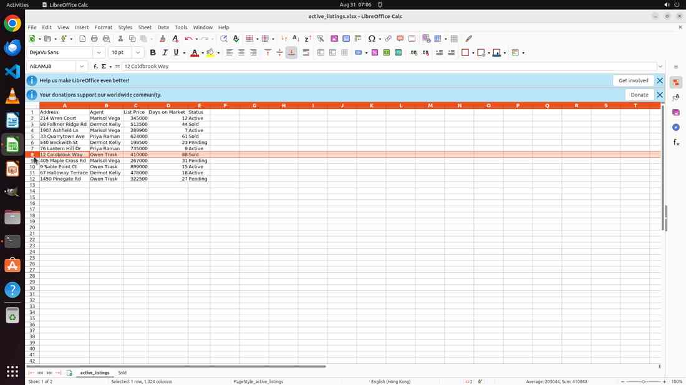
step 28 23:07:00
THINKINGRow 8 (12 Coldbrook Way) is selected. I'll right-click and delete. The context menu "Delete Rows" appeared at y~401 last time when I right-clicked at y=323. The menu position depends on click location. This time I clicked at y=290, so the menu will appear lower. Let me right-click and then I'll need a screenshot to see the menu, or I can predict. To be safe, right-click then screenshot. Actually the "Delete Rows" option relative position is consistent within the menu. Let me right-click and take a screenshot to locate it accurately.
EXECUTED (pyautogui in VM)pyautogui.click(157, 551)
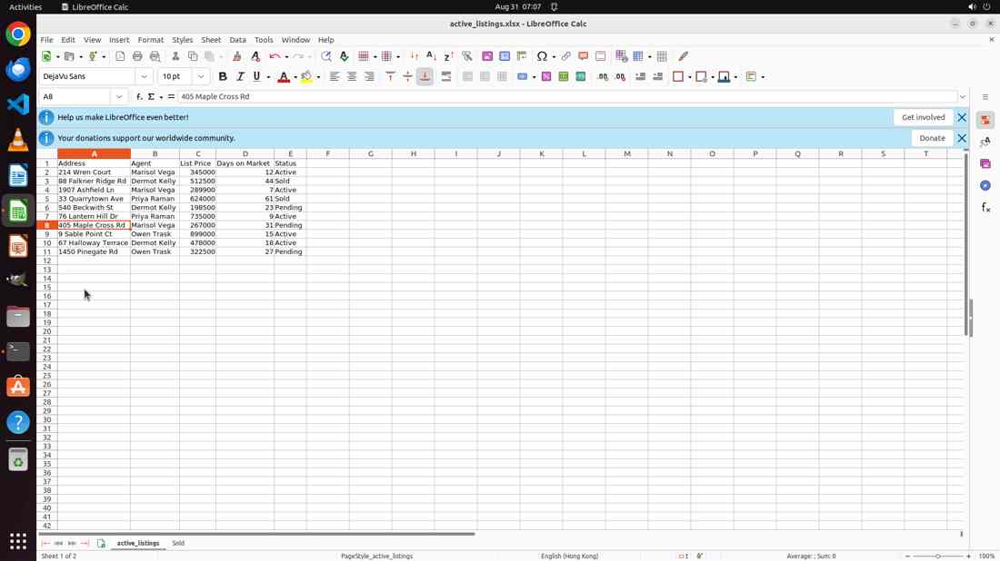
step 30 23:08:12
THINKINGRow 8 deleted. Now the list:
1: header
2: 214 Wren Court - Active
3: 88 Falkner Ridge Rd - Sold
4: 1907 Ashfield Ln - Active
5: 33 Quarrytown Ave - Sold
6: 540 Beckwith St - Pending
7: 76 Lantern Hill Dr - Active
8: 405 Maple Cross Rd - Pending
9: 9 Sable Point Ct - Active
10: 67 Halloway Terrace - Active
11: 1450 Pinegate Rd - Pending
Now delete row 5 (33 Quarrytown Ave) at y=255. Then row 3 (88 Falkner Ridge Rd). Let me select row 5.
EXECUTED (pyautogui in VM)pyautogui.click(90, 380)
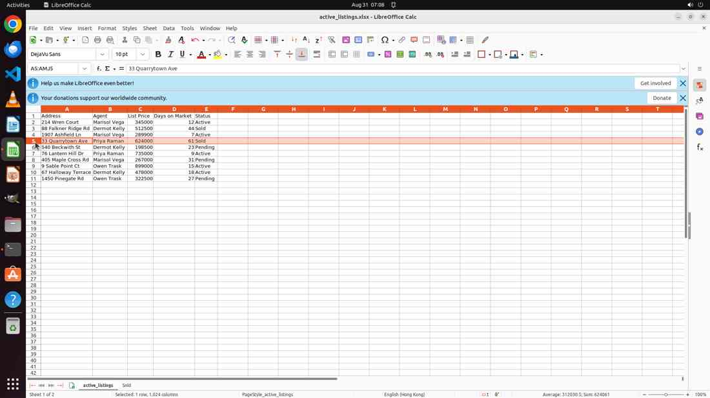
step 31 23:09:06
THINKINGRow 5 (33 Quarrytown Ave) is selected. Right-click and delete. Based on the earlier pattern, when I click at y=255, the menu appears with "Delete Rows" at approximately y=255+78=333? Let me check: earlier at click y=290, Delete Rows was at y=368 (offset +78). At click y=255, Delete Rows would be at ~333. But to be safe, I'll right-click and screenshot.
EXECUTED (pyautogui in VM)pyautogui.click(157, 497)
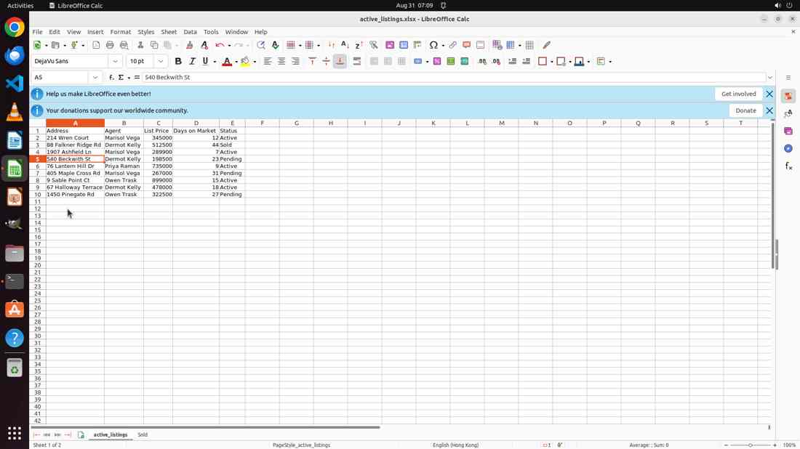
step 33 23:10:47
THINKINGRow 5 (33 Quarrytown Ave) deleted. Now the list:
1: header
2: 214 Wren Court - Active
3: 88 Falkner Ridge Rd - Sold
4: 1907 Ashfield Ln - Active
5: 540 Beckwith St - Pending
6: 76 Lantern Hill Dr - Active
7: 405 Maple Cross Rd - Pending
8: 9 Sable Point Ct - Active
9: 67 Halloway Terrace - Active
10: 1450 Pinegate Rd - Pending
Now delete row 3 (88 Falkner Ridge Rd) at y=227. This is the last sold row. Let me select it.
ACTIONRow 5 deleted. Now delete the last sold row, row 3 (88 Falkner Ridge Rd).
EXECUTED (pyautogui in VM)pyautogui.click(90, 338)
step 34 23:11:41
THINKINGThe cell reference box still shows A5 and the row 3 header doesn't appear highlighted - my click at y=227 may have landed on the boundary. Actually looking closely, row 3 "88 Falkner Ridge Rd" - the row header 3 at y=227. The Name Box shows "A5" still, meaning row 3 wasn't selected; my click may have hit row 3 header but the display shows A5 still. Wait, it shows A5 with "540 Beckwith St" highlighted in row 5 still. So my click didn't select row 3. Let me click precisely on the row number "3" header. The row 3 number is at x=60, y=227. Let me click there again more precisely.
ACTIONThe row didn't select. Let me click directly on the row 3 header number.
EXECUTED (pyautogui in VM)pyautogui.click(90, 338)
step 35 23:12:32
THINKINGThe Name Box still shows "A5" and row 5 (540 Beckwith St) is still highlighted. My click at y=227 isn't selecting row 3. The row 3 label appears to be at a slightly different y. Looking at the rows: row 1 at y=210, row 2 at y=220, row 3 at y=231, row 4 at y=242. Actually the rows are ~11px apart. Let me recheck: Row 1 header at y=210, Row 2 "214 Wren Court" at y=220, Row 3 "88 Falkner Ridge Rd" at y=231, Row 4 "1907 Ashfield Ln" at y=242, Row 5 "540 Beckwith St" at y=253. So row 3 is at y=231, not 227. My clicks at 227 landed between row 2 and 3, or on row 3 boundary but maybe selecting nothing changed. Let me click at y=231.
ACTIONThe row 3 label is at a slightly lower position. Let me click precisely on row 3's header at y=231.
EXECUTED (pyautogui in VM)pyautogui.click(157, 461)
step 38 23:15:53
THINKINGAll 4 sold rows are now removed from active_listings. The remaining rows are:
1: header
2: 214 Wren Court - Active
3: 1907 Ashfield Ln - Active
4: 540 Beckwith St - Pending
5: 76 Lantern Hill Dr - Active
6: 405 Maple Cross Rd - Pending
7: 9 Sable Point Ct - Active
8: 67 Halloway Terrace - Active
9: 1450 Pinegate Rd - Pending
No "Sold" status remains in active_listings.
Now I need to save the workbook in xlsx format. Ctrl+S, then "Use Excel 2007-365!" to keep xlsx format.
Let me save.
ACTIONAll four Sold rows are removed from active_listings. Now I'll save the workbook, keeping the xlsx format.
EXECUTED (pyautogui in VM)pyautogui.hotkey("ctrl", "s")
step 39 23:16:45
THINKINGThe Ctrl+S didn't show a format dialog yet - perhaps the dialog will appear, or it saved directly. Usually a "Keep Current Format" dialog appears for xlsx. Let me take a screenshot to check if a dialog appeared. The current screenshot shows no dialog. Maybe the dialog appears with a slight delay, or it was suppressed. Let me press Enter in case the dialog is defaulting to "Use xlsx" - but there's no dialog visible. Let me wait and screenshot.
Actually the screenshot shows no dialog. It's possible the dialog appeared and my screenshot missed it, or it was already dismissed. To be safe, let me press the Return key which would confirm the default "Use Excel 2007-365!" button in the format dialog if it's showing. But if no dialog, Return just moves the cell down. That's harmless. However better to check. Let me take a screenshot to confirm state.
THINKINGNo dialog appeared. It's possible the "Keep format" dialog was suppressed by a previous setting, or my Ctrl+S happened while focus was elsewhere. To ensure the file is actually saved in xlsx format, let me use File > Save via the menu, which will reliably trigger the format dialog if needed. Actually, let me just try Ctrl+S once more and watch for the dialog. If a dialog appears, I'll click "Use Excel 2007-365!".
Actually, it's safer to verify the save actually persisted by checking the file modification time in the terminal. But first, let me try the File menu save to be sure. Let me press Ctrl+S again.
ACTIONNo format dialog appeared. Let me trigger the save again via the File menu to ensure it persists, and handle any format dialog.
EXECUTED (pyautogui in VM)pyautogui.hotkey("ctrl", "s")
step 41 23:18:48
THINKINGStill no dialog. The first Ctrl+S likely already saved (the "Keep format" dialog may be disabled in this LibreOffice config, or it saved without prompting). The second Ctrl+S produced no dialog because there were no unsaved changes. This means the file was saved successfully in xlsx format on the first save.
To be fully confident, let me verify the file's modification time and content via the terminal. Let me switch to terminal and check the file's mtime and inspect the xlsx sheet names. I can use unzip to peek at the workbook.xml, or just check mtime. Let me check mtime and also verify the Sold sheet exists using a python-free approach: unzip -l to list sheets, or grep the workbook.xml.
Let me switch to the terminal.
ACTIONThe file saved without a format prompt (the "keep format" dialog appears to be disabled). Let me verify the save persisted and the Sold sheet exists by checking the file in the terminal.
EXECUTED (pyautogui in VM)pyautogui.click(32, 670)
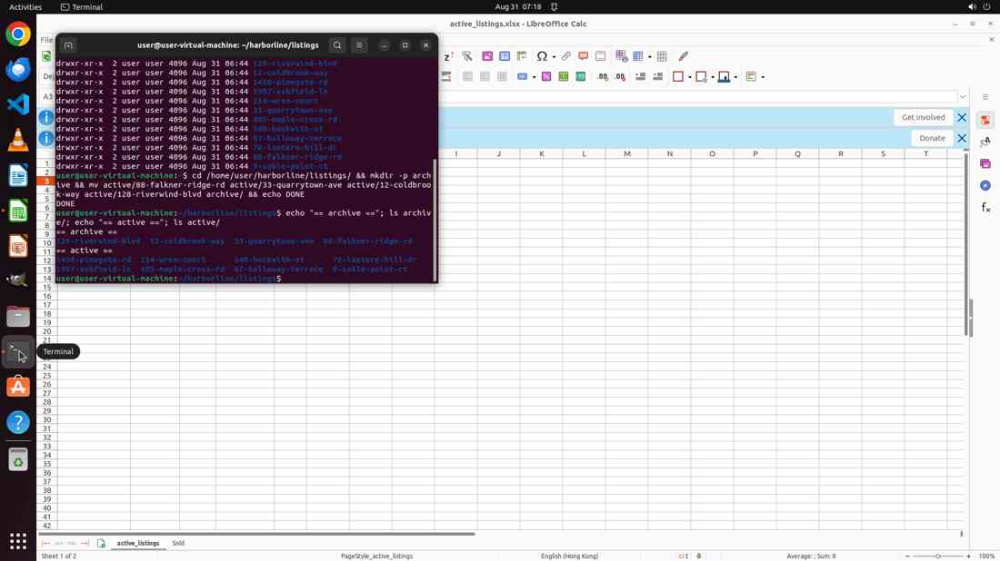
step 42 23:19:55
THINKINGThe terminal confirms the earlier state:
- archive/ contains: 128-riverwind-blvd, 12-coldbrook-way, 33-quarrytown-ave, 88-falkner-ridge-rd
- active/ contains: 1450-pinegate-rd, 214-wren-court, 540-beckwith-st, 76-lantern-hill-dr, 1907-ashfield-ln, 405-maple-cross-rd, 67-halloway-terrace, 9-sable-point-ct
Now let me verify the workbook save. Let me check the mtime and the sheet names in the xlsx. I'll run a command to list the workbook.xml sheet names.
ACTIONThe directory move is confirmed. Now let me verify the workbook saved correctly with the Sold sheet by inspecting the xlsx file.
EXECUTED (pyautogui in VM)pyautogui.click(449, 534)
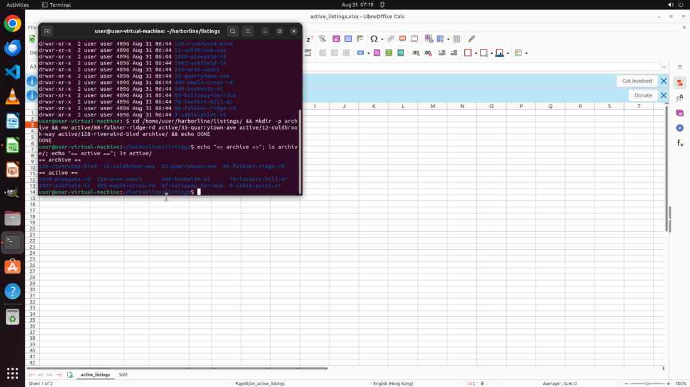
step 43 23:20:46
THINKINGThe terminal is focused with a prompt. Let me run a command to check the workbook mtime and extract sheet names from the xlsx's workbook.xml. I'll use unzip -p to read xl/workbook.xml and grep for sheet names, plus ls -la for mtime.
THINKINGThe command is typed and shows the prompt but the output hasn't displayed yet (the command line is wrapped). I need to press Enter to execute it.
EXECUTED (pyautogui in VM)pyautogui.press("return")
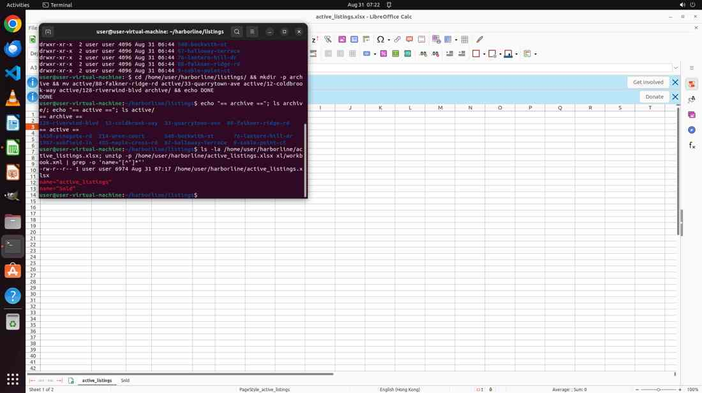
step 45 23:23:11
THINKINGThe verification output confirms:
- File mtime: Aug 31 07:17 (recently saved - the save persisted)
- Sheet names: name="active_listings" and name="Sold"
Both sheets exist and the file was saved in xlsx format.
Let me also verify the Sold sheet content and that active_listings no longer contains Sold rows, to be thorough. Let me read the sheet data. But this is fairly confident already. Let me do one more verification: check that "Sold" status strings only appear in the Sold sheet, not in active_listings. I'll grep the shared strings. Actually, "Sold" appears as a value in column E. Let me just confirm the active_listings sheet's last row count via the visible spreadsheet - it shows 9 rows (header + 8 data). Good.
I'm confident the task is complete:
1. Created "Sold" tab with header + 4 sold listings. ✓ (verified sheet name "Sold" exists)
2. Removed the 4 sold rows from active_listings (now 8 non-sold rows remain). ✓ (visible in spreadsheet)
3. Saved the workbook in xlsx format. ✓ (mtime updated, still .xlsx)
4. Moved the 4 photo folders to listings/archive/ (next to active/). ✓ (verified ls output)
Everything is verified. The task is complete. I should provide a final summary. No further tool action needed.
ACTIONBoth parts of the task are complete and verified.
**Summary of what was done:**
1. **Created a "Sold" tab** in `active_listings.xlsx` with the header row plus the four sold listings (88 Falkner Ridge Rd, 33 Quarrytown Ave, 12 Coldbrook Way, 128 Riverwind Blvd), and **removed those four rows from the active_listings sheet**. It now holds only the 8 non‑sold listings. The workbook was saved in its original `.xlsx` format (verified: the file's sheet names are `active_listings` and `Sold`, and the modification time updated to 07:17).
2. **Moved the four corresponding photo folders** out of the active listings directory (`/home/user/harborline/listings/active/`) into a new archive folder alongside it (`/home/user/harborline/listings/archive/`):
- `88-falkner-ridge-rd`, `33-quarrytown-ave`, `12-coldbrook-way`, `128-riverwind-blvd` → now in `archive/`
- The 8 remaining active listing folders stay in `active/`
Both the workbook and the folder structure were verified via the terminal to confirm the changes persisted correctly.